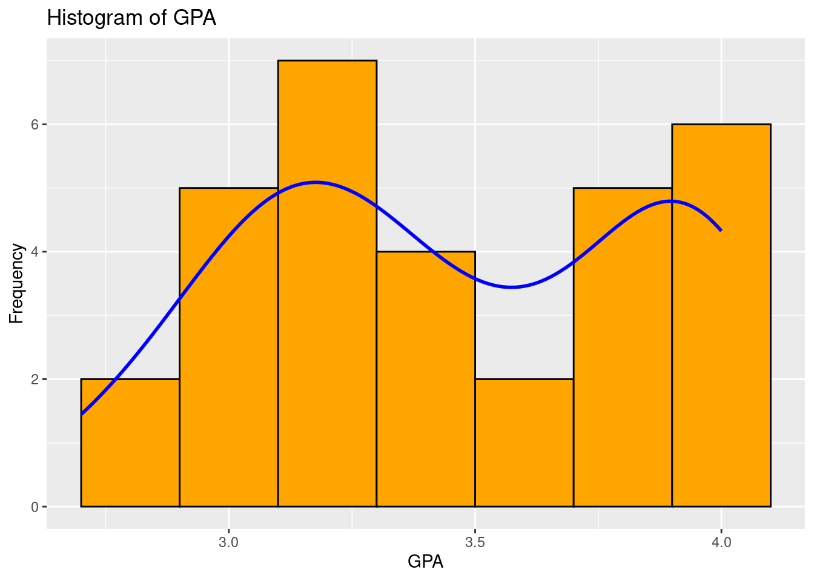
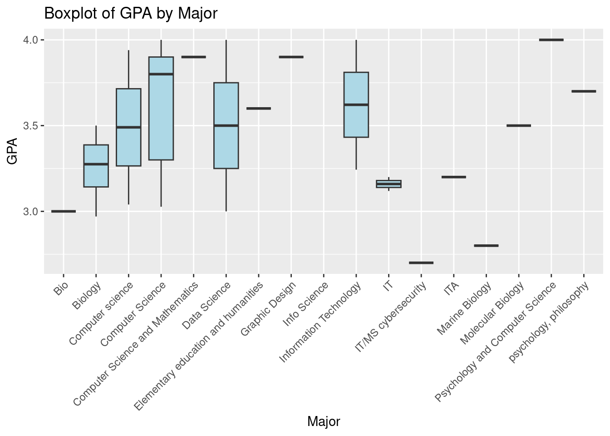

── Attaching core tidyverse packages ──────────────────────── tidyverse 2.0.0 ──
✔ dplyr 1.1.4 ✔ readr 2.1.5
✔ forcats 1.0.0 ✔ stringr 1.5.1
✔ ggplot2 3.5.2 ✔ tibble 3.2.1
✔ lubridate 1.9.4 ✔ tidyr 1.3.1
✔ purrr 1.0.4
── Conflicts ────────────────────────────────────────── tidyverse_conflicts() ──
✖ dplyr::filter() masks stats::filter()
✖ dplyr::lag() masks stats::lag()
ℹ Use the conflicted package (<http://conflicted.r-lib.org/>) to force all conflicts to become errors
df <-read_csv("230 project - Form Responses 1.csv")
Rows: 32 Columns: 6
── Column specification ────────────────────────────────────────────────────────
Delimiter: ","
chr (6): Timestamp, What is your major?, What is you GPA?, Did you pick this...
ℹ Use `spec()` to retrieve the full column specification for this data.
ℹ Specify the column types or set `show_col_types = FALSE` to quiet this message.
df <- df %>%rename(Major =`What is your major?`,GPA =`What is you GPA?`,Credits =`How many credits are you taking a semester` ) %>%mutate(GPA =as.numeric(GPA),Credits =parse_number(Credits) )
Warning: There was 1 warning in `mutate()`.
ℹ In argument: `GPA = as.numeric(GPA)`.
Caused by warning:
! NAs introduced by coercion
ggplot(df, aes(x = GPA)) +geom_histogram(binwidth =0.2, fill ="orange", color ="black") +geom_density(aes(y = ..count.. *0.2), color ="blue", size =1) +labs(title ="Histogram of GPA", x ="GPA", y ="Frequency")
Warning: Using `size` aesthetic for lines was deprecated in ggplot2 3.4.0.
ℹ Please use `linewidth` instead.
Warning: The dot-dot notation (`..count..`) was deprecated in ggplot2 3.4.0.
ℹ Please use `after_stat(count)` instead.
Warning: Removed 1 row containing non-finite outside the scale range
(`stat_bin()`).
Warning: Removed 1 row containing non-finite outside the scale range
(`stat_density()`).

ggplot(df, aes(x = Major, y = GPA)) +geom_boxplot(fill ="lightblue") +labs(title ="Boxplot of GPA by Major", x ="Major", y ="GPA") +theme(axis.text.x =element_text(angle =45, hjust =1))
Warning: Removed 1 row containing non-finite outside the scale range
(`stat_boxplot()`).

ggplot(df, aes(x = Credits, y = GPA)) +geom_point(color ="darkorange") +labs(title ="Scatterplot of GPA vs Credits", x ="Credits", y ="GPA")
Warning: Removed 1 row containing missing values or values outside the scale range
(`geom_point()`).
Warning: There were 2 warnings in `summarise()`.
The first warning was:
ℹ In argument: `min_GPA = min(GPA, na.rm = TRUE)`.
ℹ In group 12: `Major = "Info Science"`.
Caused by warning in `min()`:
! no non-missing arguments to min; returning Inf
ℹ Run `dplyr::last_dplyr_warnings()` to see the 1 remaining warning.
# A tibble: 17 × 5
Major mean_GPA sd_GPA min_GPA max_GPA
<chr> <dbl> <dbl> <dbl> <dbl>
1 Bio 3 NA 3 3
2 Biology 3.26 0.226 2.97 3.5
3 Computer Science 3.60 0.370 3.03 4
4 Computer Science and Mathematics 3.9 NA 3.9 3.9
5 Computer science 3.49 0.636 3.04 3.94
6 Data Science 3.5 0.707 3 4
7 Elementary education and humanities 3.6 NA 3.6 3.6
8 Graphic Design 3.9 NA 3.9 3.9
9 IT 3.16 0.0573 3.12 3.2
10 IT/MS cybersecurity 2.7 NA 2.7 2.7
11 ITA 3.2 NA 3.2 3.2
12 Info Science NaN NA Inf -Inf
13 Information Technology 3.62 0.535 3.24 4
14 Marine Biology 2.8 NA 2.8 2.8
15 Molecular Biology 3.5 NA 3.5 3.5
16 Psychology and Computer Science 4 NA 4 4
17 psychology, philosophy 3.7 NA 3.7 3.7
#2 Questions
#1. Is there a relationship between the number of credits a student takes and their GPA?
cor_test <-cor.test(df$Credits, df$GPA)lm_model <-lm(GPA ~ Credits, data = df)summary(lm_model)
Call:
lm(formula = GPA ~ Credits, data = df)
Residuals:
Min 1Q Median 3Q Max
-0.79414 -0.30719 -0.06317 0.35138 0.70173
Coefficients:
Estimate Std. Error t value Pr(>|t|)
(Intercept) 2.71065 0.43547 6.225 8.62e-07 ***
Credits 0.04897 0.02809 1.743 0.0919 .
---
Signif. codes: 0 '***' 0.001 '**' 0.01 '*' 0.05 '.' 0.1 ' ' 1
Residual standard error: 0.3977 on 29 degrees of freedom
(1 observation deleted due to missingness)
Multiple R-squared: 0.09482, Adjusted R-squared: 0.06361
F-statistic: 3.038 on 1 and 29 DF, p-value: 0.09193
#The scatterplot of GPA vs credits shows that there is no strong linear correlation between the number of credits taken and GPA. Students taking both a lower and a high numbers of credits have a wide range of GPAs, showing that the amount of credits alone does not determine academic performance of a student.
#2. Do students in certain majors tend to have higher GPAs than others?
anova_model <-aov(GPA ~ Major, data = df)summary(anova_model)
Df Sum Sq Mean Sq F value Pr(>F)
Major 15 2.626 0.1751 1.076 0.444
Residuals 15 2.441 0.1627
1 observation deleted due to missingness
#Yes, the boxplot and summary statistics show differences in GPA across majors. For example, students majoring in Computer Science and Mathematics, and Elementary Education and Humanities showed to have higher median GPAs, while those in IT/MS Cybersecurity and Marine Biology showed having a lower average GPAs. This suggests that major choice may influence a students. GPA